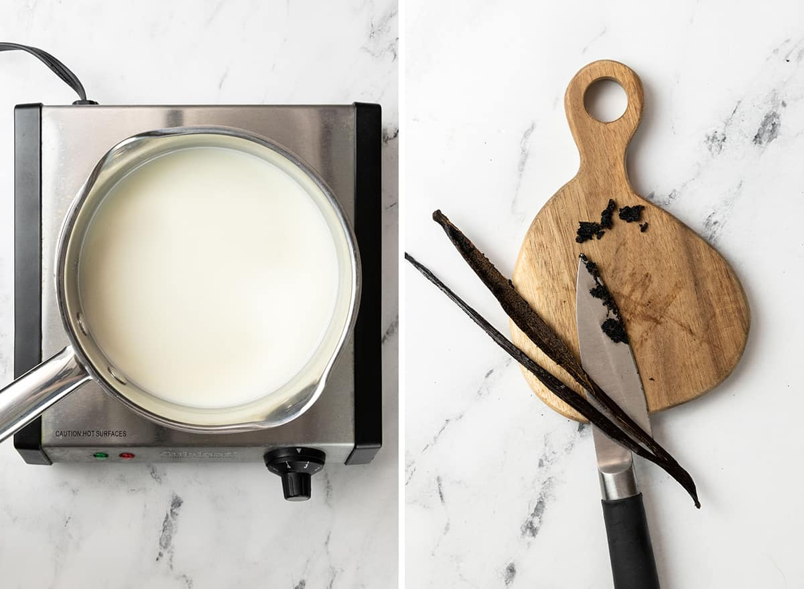
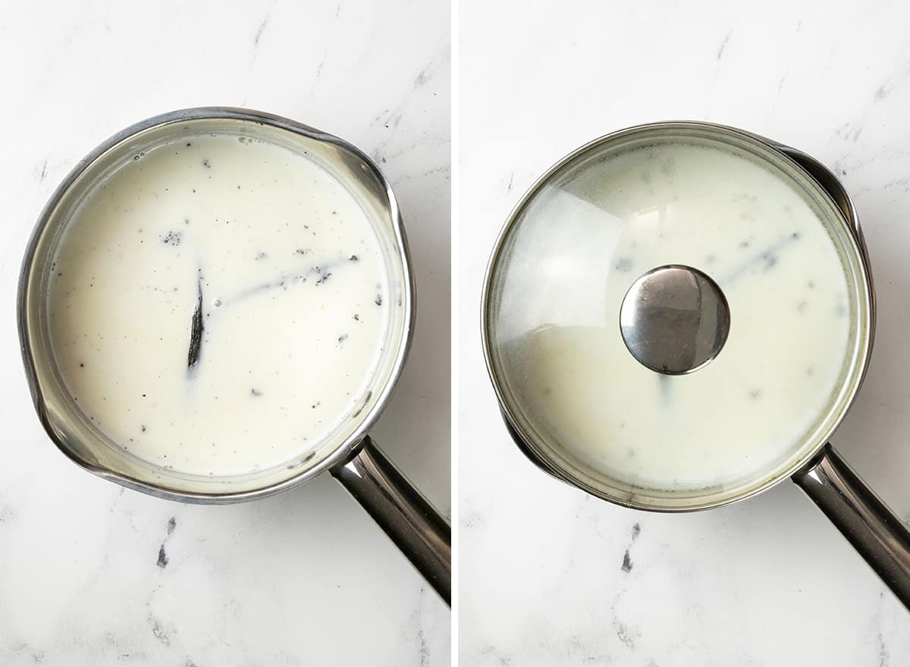
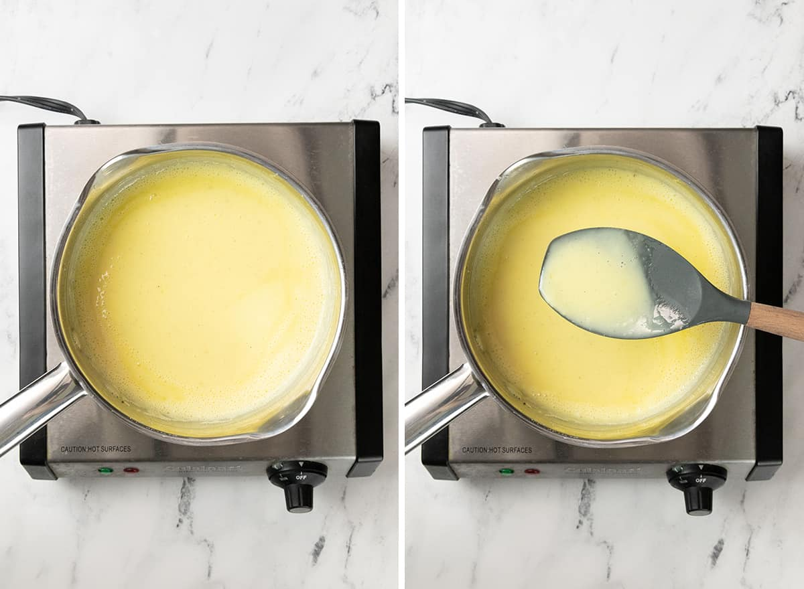
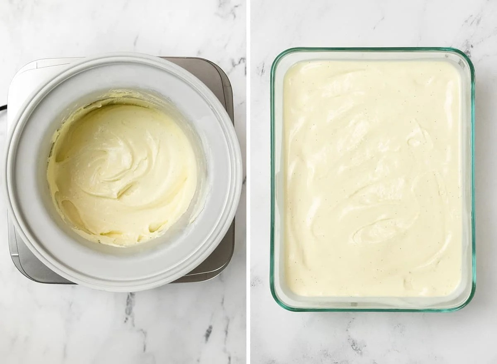
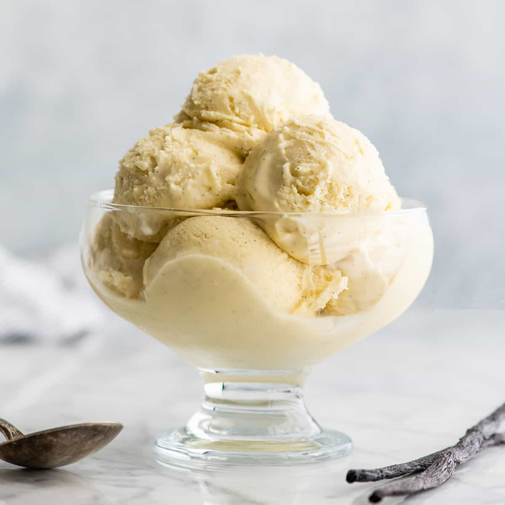

Delicious Homemade Ice Cream
This recipe will guide you through making creamy, dreamy homemade ice cream that will delight your taste buds.
Ingredients
- 2 cups heavy cream
- 1 cup whole milk
- 3/4 cup granulated sugar
- 1 tablespoon vanilla extract
- Pinch of salt
Method
- Combine heavy cream, whole milk, granulated sugar, vanilla extract, and a pinch of salt in a mixing bowl.

- Whisk the ingredients until the sugar is completely dissolved and the mixture is smooth.

- Pour the mixture into an ice cream maker and churn according to the manufacturer's instructions until it reaches a soft-serve consistency.

- Transfer the churned ice cream to a container and freeze for at least 4 hours or until firm.

- Scoop and enjoy your homemade ice cream!
